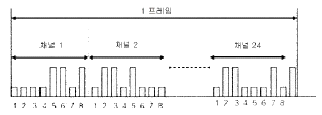
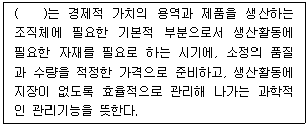

통신설비기능장 (2018-10-06 기출문제)
1과목: 임의 과목 구분(20문항)
1. 전자교환의 망형 회선망에서 60개의 장소를 상호 연결할 수 있는 총 전송로는 몇 회선이 되는가?
- 59
- 61
- 1,770
- 3,540
(정답률: 91%)

2. 다음 중 ADPCM에서 주로 사용하는 양자화는?
- 선형 양자화
- 비선형 양자화
- 비예측 양자화
- 적응형 양자화
(정답률: 74%)
3. PCM 방식에서 정보의 손실없이 재생하기 위하여 표본화 주파수는 신호 주파수의 최소 몇 배 이상 되어야 하는가?
- 1.5배
- 2배
- 3배
- 5배
(정답률: 89%)
4. 데이터 전송에서 다른 요소가 일정하다고 할 때 신호 해석 시 틀린 것은?
- 데이터 전송률이 증가하면 비트에러율(BER)이 증가한다.
- 신호대잡음비(SNR)가 증가하면 비트에러율(BER)이 증가한다.
- 전송로의 데이터 폭의 증가는 데이터 전송률의 증가를 허용한다.
- 한 번의 변조로 전송 가능한 비트수가 증가되면 데이터 신호(전송)속도는 증가한다.
(정답률: 74%)
5. 에러제어에서 에러검출 또는 정정 부호가 아닌 것은?
- 패리티 부호
- BCH 부호
- 해밍 부호
- BCD 부호
(정답률: 79%)
6. 정보통신 시스템에서 직렬 전송 방식을 채택하는 이유는?
- 근거리 전송에 적합하기 때문이다.
- 오류 검출 및 정정이 쉽기 때문이다.
- 회선의 설치비용이 경제적이기 때문이다.
- 직·병렬 변환기가 필요 없으므로 시스템이 간단하기 때문이다.
(정답률: 75%)
7. 음성통신의 호출 정보와 데이터통신의 접속정보 등을 통합적으로 관리하기 위한 개방 신호 처리 방식은?
- R2
- MFC
- NO.7
- SS7
(정답률: 70%)
8. 다음 중 동기 전송 방식과 비동기 전송 방식에 대한 설명으로 틀린 것은?
- 동기 방식은 데이터 블록의 앞에 동기문자가 사용된다.
- 동기 방식은 한 묶음으로 구성하는 글자들 사이에는 휴지 간격이 없다.
- 비동기 방식은 전송 속도가 보통 2,400[bps]을 넘는 경우에 사용한다.
- 비동기 방식은 스타트 비트 뿐만 아니라, 스톱 비트도 필요하다.
(정답률: 88%)
9. 다음 중 데이터 통신에서 채널의 전송용량을 늘리는 방법으로 틀린 것은?
- 채널대역폭을 넓힌다.
- 신호세력을 높인다.
- 잡음세력을 줄인다.
- 전송속도를 높인다.
(정답률: 82%)
10. PCM 24 채널 프레임 동기방식에 의한 타임 슬롯의 1프레임의 비트(bit) 수는?

- 8
- 33
- 192
- 193
(정답률: 81%)
11. IS-95 W-CDMA FDD(Fre-quency Division Duplex)의 비동기방식에서 기지국을 구분하기 위한 PN코드는 모두 몇 개인가?
- 32개
- 64개
- 256개
- 512개
(정답률: 67%)
12. 다음 중 QAM 방식의 특징으로 틀린 것은?
- QAM신호는 2개의 직교성 DSB-SC신호를 선형적으로 합성한 것이다.
- M진 QAM과 M진 PSK의 전력스펙트럼과 대역폭 효율은 동일하다.
- 16진 QAM은 4개의 레벨을 갖는 4개의 위상과 4개의 레벨을 갖는 8개의 위상의 조합으로 구성된다.
- QAM의 소요 전송대역은 B(R)=2B로서 DSB-SC의 경우와 동일하다.
(정답률: 86%)
13. 지상에서 수직으로 전파를 발사하여 2[ms]뒤에 반사파가 측정되었다. 이때 전리층의 이론상 높이는?
- 400[㎞]
- 300[㎞]
- 200[㎞]
- 100[㎞]
(정답률: 75%)
14. 다음 중 이동통신시스템의 W-CDMA(Wideband CDMA) 채널 구조로 맞지 않은 것은?
- 논리 채널(Logical Channel)
- 전달 채널(Transport Channel)
- 물리 채널(Physical Channel)
- 분리 채널(Response Channel)
(정답률: 68%)
15. 일반적으로 통신용 수신기에서 통과 대역폭은 선택도 특성 곡선의 최대점(0[dB])에서 몇 [dB]까지 감쇠하는 지점의 대역폭으로 정하고 있는가?
- 3[dB]
- 6[dB]
- 9[dB]
- 12[dB]
(정답률: 79%)
16. 자유공간에서 송신출력이 동일한 조건에서 사용하는 전파의 파장이 2배 증가하면 수신전력은 몇 배가 되는가?
- 1/2
- 1/4
- 2
- 4
(정답률: 78%)
17. 안테나에 반사기를 붙이면 어떤 효과가 있는가?
- 임피던스 정합이 좋아진다.
- 광대역 특성이 얻어진다.
- 접지저항 손실이 적어진다.
- 전파를 한 방향으로 보낼 수 있다.
(정답률: 86%)
18. 다음 중 정지궤도 위성의 운용에 따른 문제점과 거리가 먼 것은?
- 궤도확보 문제
- 내구성 우수함에 따른 수리제한 문제
- 전송손실 및 지연 문제
- 초기 투자비용이 높은 문제
(정답률: 87%)
19. 안테나의 복사저항이 25[Ω]이고 손실저항이 5[Ω]일 때 이 안테나의 복사 효율은 약 얼마인가?
- 16[%]
- 25[%]
- 67[%]
- 83[%]
(정답률: 63%)
20. 광케이블 포설작업 중 광케이블 견인 시 케이블의 비틀림 현상을 줄이기 위해 케이블과 견인 로프 간을 연결하는 기구는?
- 관구가이드(Duct Guide)
- 되돌림쇠(Free Device)
- 선통선 주입기
- 커브가이드(Curve Guide)
(정답률: 84%)
2과목: 임의 과목 구분(20문항)
21. 이동통신에서 사용되는 다원 접속방식이 아닌 것은?
- SDMA
- FDMA
- TDMA
- CDMA
(정답률: 85%)
22. ITU-T 권고안 중 전화망을 통한 아날로그 신호 전송에 대한 인터페이스 규격은?
- G 시리즈
- V 시리즈
- Q 시리즈
- X 시리즈
(정답률: 77%)
23. UTP 케이블을 이용하여 기가비트(Gigabit) 이더넷(Ethernet)을 구현할 때 사용되는 표준규격은?
- IEEE 802.3u
- IEEE 802.3z
- IEEE 802.3ab
- IEEE 802.3ae
(정답률: 85%)
24. 다음 중 사용자 정보 인증에 대한 보안 요구사항에 해당하지 않는 것은?
- 차별(Difference)
- 인가(Authorization)
- 인증(Authentication)
- 식별(Identification)
(정답률: 85%)
25. 다음 중 웹브라우저에서 개인정보를 수집 및 추적 하는 기술이 아닌 것은?
- 쿠키(Cookie)
- 인증서
- 비콘(Beacon)
- History Stealing
(정답률: 81%)
26. 넷마스크의 비트 정보를 십진수가 아니라 비트의 개수를 적어서 표기하는 방법을 무엇이라 하는가?
- Subneting
- Suppernetting
- Netmask
- CIDR
(정답률: 74%)
27. 상위계층의 데이터에 헤더나 트레일러와 같은 각종 제어 정보를 추가하여 하위계층으로 내려 보내는 과정을 무엇이라고 하는가?
- 흐름제어(Flow Control)
- 오류제어(Error Control)
- 동기화(Synjchronous)
- 캡슐화(Encapsulation)
(정답률: 87%)
28. 다음 중 인터넷에서 사용하고 있는 통신용 프로토콜은?
- IEEE 802
- TCP/IP
- IEEE 802.2
- X.21
(정답률: 85%)
29. 인터넷 웹사이트를 통해 개인의 컴퓨터나 휴대폰, 사내 컴퓨터에 저장된 파일이나 문서, 이미지, 영상 파일 등을 암호화하여 열지 못하도록 만든 후 온라인 전자화폐 지불시 해독용 암호 키를 주겠다며 금품을 요구하는 행위를 무엇이라 하는가?
- Ransomware
- Spyware
- DDoS
- Dropper
(정답률: 88%)
30. 외부환경에 능동소자 대신 전원이 필요하지 않은 수동소자를 사용해 국사에서 원격노드(Remote Node)까지 연결되는 단일 광케이블을 분기시켜 가입자들에게 연결하는 방식은?
- Ethernet
- Access Point
- Active Optical Network
- Passive Optical Network
(정답률: 82%)
31. 다음 중 전자우편을 안전하게 전송할 수 있도록 개발된 End-to-End 방식의 보안 프로토콜로 가장 적합한 것은?
- SSL
- TLS
- S/MIME
- SMTP
(정답률: 78%)
32. 다음 중 IPsec의 설명으로 적합하지 않은 것은?
- IETF에서 개발한 프로토콜이다.
- IP계층에서 데이터를 보호하기 위한 복수의 프로토콜로 구성된다.
- 송수신자의 주소에 사설네트워크 주소를 이용할 수 있다.
- 연결형 무결성, 기밀성, 접근제어 등의 서비스를 제공한다.
(정답률: 70%)
33. 다음 중 각 분산의 크기 나열리 맞는 것은?
- 재료 분산 ＞ 모드 분산 ＞ 구조 분산
- 모드 분산 ＞ 재료 분산 ＞ 구조 분산
- 재료 분산 ＜ 모드 분산 ＜ 구조 분산
- 모드 분산 ＜ 재료 분산 ＜ 구조 분산
(정답률: 82%)
34. 시외 통신 케이블의 심선수가 500회선(Pair)일 때, 이 케이블의 심선은 어떤 구조인가?
- 쌍연
- 복합연
- 층연
- 유닛연
(정답률: 83%)
35. 다음 중 통신선로의 외피 구조에 의한 분류로 틀린 케이블은?
- 비 케이블 : 가공용 케이블
- 포 케이블 : 산악용 케이블
- 대 케이블 : 관로용 케이블
- 선 케이블 : 해저용 케이블
(정답률: 73%)
36. 2중 절연으로 절연 저항이 높아 전화 고장이 적고, 통화 품질이 우수하여 LAN, VAN, ISDN 등의 구성에 적합한 케이블은?
- Screen Cable
- Jelly Filled Cable
- Foam Skin Cable
- Optical Fiber Cable
(정답률: 76%)
37. 광섬유의 규격화 주파수에 대한 설명으로 적합한 것은?
- 규격화 주파수 값은 파장이 적어지면 작아진다.
- 규격화 주파수 값은 코어경이 작아지면 커진다.
- 규격화 주파수 값은 굴절율 차가 커지면 작아진다.
- 광섬유가 단일모드가 되기 위한 조건을 나타낸다.
(정답률: 63%)
38. 다음 광섬유의 손실 중 고유손실에 해당하는 것은?
- 흡수 손실
- 접속 손실
- 마이크로 밴딩 손실
- 찌그러짐에 의한 손실
(정답률: 79%)
39. 국내 표준 FT3 광통신 방식을 국간 중계에 적용시 시스템 개통 후 양 광단국간 DS-3 신호를 1시간 동안 감시한 결과 125개의 패리티 에러가 발생하였다면 이 시스템의 BER(Bit Error Rate, Bit Error Ratio)은 약 얼마인가?
- 03038 × 10-8
- 0.078 × 10-8
- 12.883 × 108
- 26.140 × 108
(정답률: 73%)
40. 다음 중 광섬유 케이블의 단점에 대한 설명으로 틀린 것은?
- 광섬유 심선 직경이 작아 접속하기 어렵다.
- 전력전송이 어려우므로 중계급 개재심선이 필요하다.
- 광심선 접속이 어려우므로 고도의 접속기술이 요구된다.
- 분기 및 결합이 가능하다.
(정답률: 78%)
3과목: 임의 과목 구분(20문항)
41. 주파수가 5[MHz]의 전파에 사용하는 λ/4 수직접지 안테나의 길이는?
- 5[m]
- 10[m]
- 15[m]
- 20[m]
(정답률: 61%)
42. 초고속 정보통신건물 인증에서 동(Twisted Pair cable) 선로의 구내 배선 성능 측정항목 및 기준으로 틀린 것은?
- 선번확인시험(와이어 맵)은 각 구간의 정확한 배선연결 여부를 확인하는 시험으로서, 배선의 단선이나 뒤바뀜이 없어야 한다.
- 배선구간의 길이측정은 패치코드를 포함한 동선로 구간의 길이는 100[m]를 초과하지 말아야 한다.
- 전기적 특성 시험은 반사손실, 최대삽입손실, 누화손실, 전력합누화손실 등의 항목에 적합하여야 한다.
- 측정하려는 구내배선 구간의 양단에서 패치코드를 사용하여 측정기와 접속한 후 구내배선 성능을 측정한다.
(정답률: 81%)
43. 입사한 광전력을 다수의 도파(포트)로 분리해주는 광수동소자는?
- 광분배함(OFD : Optical Fiber Distribution)
- 광스플리터(Optical Splliter)
- 광원(Light Source)
- 광 아이솔레이터(Optical Isolator)
(정답률: 78%)
44. 펄스 시험기에서 송출된 펄스가 10[㎲]이후에 수신되었다. 전파의 속도가 300[m/㎲]일 때 반사 지점까지의 거리는 몇 [km]인가?
- 1
- 1.5
- 2
- 2.5
(정답률: 68%)
45. 어느 2지점 간 포설된 동축케이블의 특성 임피던스를 측정하였더니 개방 임피던스는 36[Ω]이고, 단락 임피던스는 225[Ω]이었다. 이 케이블의 특성 임피던스(Z0)는 얼마인가?
- 25[Ω]
- 75[Ω]
- 90[Ω]
- 250[Ω]
(정답률: 53%)
46. 다음 중 후방 산란법에 의한 광을 검출하는 장비로서 가장 널리 이용되는 것은?
- 오실로스코프
- 레벨메터
- OTDR
- 회로시험기
(정답률: 92%)
47. 다음 중 광섬유의 통신방식에서 발광소자의 조건으로 맞지 않은 것은?
- 광으로부터 전기신호로의 변환 효율이 높을 것
- 광섬유와 결합효율이 좋을 것
- 출력이 크고 휘도가 높을 것
- 장시간 상온에서 연속 동작할 것
(정답률: 67%)
48. 75[Ω]계에서 0[dBm]이 되려면 P=1[mW]이다. 전류(I)가 3.65[mA]일 때 부하 양단전압은?
- 0.274[V]
- 1.274[V]
- 0.775[V]
- 1.775[V]
(정답률: 60%)
49. 다음 중「지능형 홈네트워크 설비 설치 및 기술기준」에서 정하는 원격제어기가 아닌 것은?
- 가스밸브제어기
- 조명제어기
- 창문개폐제어기
- 난방제어기
(정답률: 88%)
50. 다음 중「방송통신설비의 기술기준에 관한 규정」에서 정하는 정의가 잘못된 것은?
- “특저압”이란 직류 48볼트 이하, 교류 5볼트 이하인 전압을 말한다.
- “저압”이란 직류는 750볼트 이하, 교류는 600볼트 이하인 전압을 말한다.
- “고압”이란 직류는 750볼트, 교류는 600볼트를 초과하고 각각 7,000볼트 이하인 전압을 말한다.
- “특고압”이란 7,000볼트를 초과하는 전압을 말한다.
(정답률: 80%)
51. 방송통신서비스에 사용되는 방송통신설비가 갖추어야 할 안전성 및 신뢰성에 관한 설비의 일반기준 항목과 관계없는 것은?
- 대체접속계통의 설정
- 전송로별 AS센타 구성
- 분산수용
- 전송로설비의 동작 감시
(정답률: 87%)
52. 「접지설비·구내통신설비·선로설비 및 통신공동구 등에 대한 기술기준」에서 정하는 통신관련 시설의 접지저항은 몇 [Ω]이하를 기준으로 하는가?
- 50[Ω] 이하
- 30[Ω] 이하
- 20[Ω] 이하
- 10[Ω] 이하
(정답률: 81%)
53. 각종 통신설비의 접지체는 가스, 산 등에 의한 부식의 우려가 없는 곳에 매설하여야 한다. 접지체 상단이 지표면에서 수직으로 최소 어느 정도의 깊이에 매설하여야 하는가?
- 55[cm] 이상
- 65[cm] 이상
- 75[cm] 이상
- 85[cm] 이상
(정답률: 76%)
54. 다음 중 「지능형 홈네트워크 설비 설치 및 기술기준」에서 정하는 용어의 정의가 틀린 것은?
- “홈게이트웨이”란 세대망과 단지망을 상호 접속하는 장치로서, 세대내에서 사용되는 홈네트워크 기기들을 유무선 네트워크 기반으로 연결하고 홈네트워크 서비스를 제공하는 기기를 말한다.
- “방재실”이란 단지서버를 설치하기 위한 공간을 말한다.
- “단지네트워크장비”란 세대내 홈게이트웨이와 단지서버간의 통신 및 보안을 수행하는 장비로서, 백본(back-bone), 방화벽(Fire Wall), 워크그룹스위치 등을 말한다.
- “월패드”란 세대 내의 홈네트워크 시스템을 제어할 수 있는 기기를 말한다.
(정답률: 86%)
55. 다음은 어떤 관리에 대한 설명이다. 괄호 안에 들어갈 알맞은 용어는?

- 공수관리
- 자재관리
- 구매관리
- 재고관리
(정답률: 74%)
56. 제품의 컨셉 개발에서 아이디어를 도출하기 위하여 브레인스토밍(Brainstorming)을 실시 하고자 한다. 다음 중 가장 부적절한 진행방법은 어떤 것인가?
- 의견에 대한 실현 가능성을 우선 고려한다.
- 타인의 의견에 자신의 의견을 접목시키기도 한다.
- 타인의 의견에 대한 비판을 하지 않는다.
- 여러 의견을 많이 제안 하는 것을 환영한다.
(정답률: 85%)
57. 다음 중 품질관리(Quality Control)의 분야가 아닌 것은?
- 품질보증
- 품질관리
- 품질경영
- 품질가치
(정답률: 65%)
58. 다음 중 동작시간 표준분석(PTS)의 종류에 해당되지 않는 것은?
- 양손 작업분석
- 서블리그(Therblig) 분석
- 동시 동작분석
- 제품 공정분석
(정답률: 61%)
59. 다음 중 도수분포법을 이용한 데이터 정리방법의 장점이 아닌 것은?
- 불량손실이나 원인을 항목별로 묶어서 비중있는 항목으로 중점관리 할 수 있다.
- 많은 데이터로부터 평균치와 표준편차를 구할 수 있다.
- 원 데이터를 규격과 대조하기가 쉽다.
- 흩어진 데이터의 모양을 알 수 있다.
(정답률: 64%)
60. 수요예측 방법의 하나인 정성적 기법에 해당되지 않는 것은?
- 델파이법
- 시장조사법
- 시계열 분석법
- 전문가 의견법
(정답률: 63%)